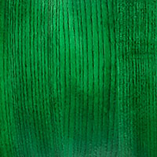
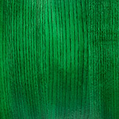

Trommeltyp & Größe
Ich möchte eine in der Größe

Welche Trommel passt zu mir? Miya-Daiko oder Hira-Daiko?
Wir bieten dir Miya-daikos und Hira-daikos in verschiedenen Größen. Unsere Taikos werden in Form & Größe präzise so hergestellt wie in Japan und in der Maßeinheit Shaku angegeben. Ein Shaku entspricht ziemlich genau 30cm. Somit entspricht 1,4shaku einen bespielbaren Felldurchmesser von 42cm (42er Miya). 1,6shaku sind entsprechend 48cm (bespielbarer) Felldurchmesser (48er Miya).
Eine 48er Miya-daiko (1,6shaku) ist eine sehr universelle Trommel. Du kannst sie mit sehr dicken Bachi spielen, was für die seitliche Schlagtechnik (jap. "Yoko-uchi" oder “Naname-uchi”) sehr interessant ist. Bedingt durch die Größe und einem Gewicht von ca. 20kg ist diese Trommel natürlich aufwendiger im Transport. Die Höhe der Miya-daiko beträgt 60cm.
Hier hat eine 42er Miya-daiko (1,4shaku) klare Vorteile und steht optisch und klanglich ihrer etwas größeren Schwester in nichts nach. Sie wiegt unter 14kg und passt wohl in jeden PKW-Kofferraum und fährt auch gerne mal auf die Rücksitzbank mit. Ebenfalls macht sie eine gute Figur auf einem Schrägständer und kann noch mit mittleren Bachi kraftvoll gespielt werden. Die Höhe beträgt 52,5 cm.
Wenn deine Taiko noch mobiler sein soll, Du gerne mit Bus und Bahn unterwegs bist und deine Taiko zu jedem Training oder Ausflug mit soll, passt eine Hira-daiko (jap. "flache Trommel") zu Dir. Wir bauen Sie in 4 Größen als 42er (bespielbarer Felldurchmesser 42 cm) bis 51cm (1,4 bis 1,7 shaku). Die Höhe des Trommelkörpers ist ungefähr nur halb so hoch wie bei einer Miya-daiko. So eine Trommel ist viel leichter und kann ohne Auto transportiert werden. Der Klang einer Hira-daiko ist ebenfalls flacher und der Ton länger als bei einer Miya. Für die Taiko-stile Yoko-uchi (jap. "seitlich schlagen") und Naname-uchi (jap. "schräg schlagen") benötigst du aber eine oben beschriebene Miya-daiko.
Holzart & Farbe
Für meine Taiko möchte ich


 

Beizton "Birne"
Wir verwenden hochwertige, europäische Esche. Als Holz liefert es die Qualität die wir zum Taikobau benötigen. Es ist relativ hell und lässt sich damit gut auf den Wunschfarbton beizen. Und dabei bleibt die wunderschöne Eschen-Maserung weiterhin sichtbar.
Alternativ zu Esche ist auch Ahorn (mit Aufpreis) möglich. Ein sehr helles und hartes Holz mit weniger Maserung.
Gerne verwende ich Holz auch in seiner Naturfarbe. So hat z.B. Rüster (Ulmenholz) einen schönen braunton, den man dann nicht überbeizen sollte.
Empfehlen möchten wir Dir Esche!
Bei der Wahl deiner Farbe solltest Du berücksichtigen, ob die Taiko mit anderen Instrumenten aus Deiner Taikogruppe auf der Bühne stehen soll. In diesem Fall ist es von Vorteil, die Optik passend zu den anderen Taikos zu wählen.
Haltegriffe
Ich möchte folgende Griffe:


Ohne Haltegriffe
Haltegriffe sind dekorativ und funktionell. Wenn du eine 20kg schwere Miya-daiko auf einen hohen Ständer heben musst, sind sie fast unverzichtbar. Bei kleineren Trommeln wie den Hira-daikos kann man sie, wenn optisch gewünscht gerne anbringen, das Handling gelingt auch ohne Griffe leicht.
Unsere Haltegriffe werden von einem Kloben gehalten, der durch die Trommelwand hindurchgeführt und von innen verschraubt wird. Die schwarze Grundplatte gibt es in zwei Größen. Darauf befindet sich dann entweder eine flache Messingrosette oder eine dickere Stahlrosette. Letztere kann sogar ohne die Grundplatte verwendet werden - eine sehr schöne Option für kleinere Trommeln.